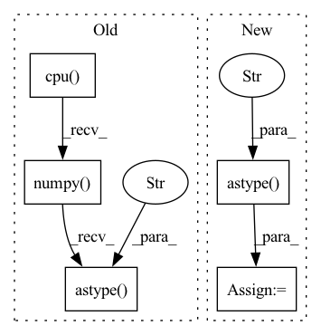

Pattern ID :25980
Before Change
prediction = prediction.detach().cpu()
down_pred = self.down_scale(prediction.unsqueeze(1))
down_target = self.down_scale(target.unsqueeze(1))
down_target = down_target.cpu().numpy() //[6, 1, 7, 128, 128]
// print(down_pred.size())
prediction[prediction>=0.5] = 1.0
prediction[prediction<0.5] = 0.0
prediction = prediction.numpy()
down_pred[down_pred>=0.5] = 1.0
down_pred[down_pred<0.5] = 0.0
down_pred = down_pred.numpy()
//// juexiao
// print("prediction", prediction.shape)
// target[target>0.5] = 1.0
// target[target<=0.5] = 0.0
target = target.cpu().numpy()
// print("target", target.shape)
prediction = prediction.reshape(-1).astype("int64")
target = target.reshape(-1).astype("int64")
down_pred = down_pred.reshape(-1).astype("int64")
down_target = down_target.reshape(-1).astype("int64" )
self.evaluator["1"].addBatch(prediction, target)
self.evaluator["8"].addBatch(down_pred, down_target)
returnAfter Change
scale2_pred = scale2_pred.reshape(-1).astype("int64")
scale2_target = scale2_target.reshape(-1).astype("int64")
scale4_pred = scale4_pred.reshape(-1).astype("int64")
scale4_target = scale4_target.reshape(-1).astype("int64" )
self.evaluator["1"].addBatch(prediction, target)
self.evaluator["2"].addBatch(scale2_pred, scale2_target)
self.evaluator["4"].addBatch(scale4_pred, scale4_target)
returnIn pattern: SUPERPATTERN
Frequency: 3
Non-data size: 5
Instances Fragment ID: 78469749
Project Name: coperception/star
Commit Name: 6a0409967e276127415af7e0a80fe34de9f445cc
Time: 2022-06-13
Author: 954742885@qq.com
File Name: coperception/utils/metrics.py
M Class Name: Metrics
N Class Name: Metrics
M Method Name: add_batch(3)
N Method Name: add_batch(3)
M Parent Class:
N Parent Class:
M File Name: coperception/utils/metrics.py
N File Name: coperception/utils/metrics.py
M Start Line: 152
M End Line: 178
N Start Line: 153
N End Line: 190
Before Change
if input.size(1) == 1:
input_array = np.uint8(input[0, 0,:,:].cpu().numpy().astype("float") * 255)
else:
input_array = np.uint8(input[0, :,:,:].cpu().numpy().astype("float" ) * 255)
input_img = Image.fromarray(input_array)
return output_img
elif isinstance(input, DataLoader):After Change
output = (F.softmax(output, dim=1)[0, 1, :,:])
if threshold:
output = (output > .5).astype("float" )
if to_pil:
return tensor2pil(output)
else: Fragment ID: 78469748
Project Name: anguelos/tormentor
Commit Name: dc8c80e33419c61aa824a4dabe00ff8fd5f6d8ea
Time: 2022-09-05
Author: anguelos.nicolaou@gmail.com
File Name: examples/text_segmentation/src/bunet.py
M Class Name: BUNet
N Class Name: BUNet
M Method Name: binarize(4)
N Method Name: binarize(2)
M Parent Class: nn.Module
N Parent Class: nn.Module
M File Name: examples/text_segmentation/src/bunet.py
N File Name: examples/text_segmentation/src/bunet.py
M Start Line: 66
M End Line: 83
N Start Line: 66
N End Line: 83
Before Change
"""
// scaled_x = (torch.clamp(x, -1, 1) + 1) * 255 / 2
scaled_x = torch.clamp(x, 0, 1) * 255 // from [0., 1.]
return scaled_x.cpu().numpy().astype("uint8" )
After Change
x = x / (max_val - min_val) // ~[0, 1]
x = x * 255. // ~[0, 255]
x = torch.clamp(x, 0., 255.)
x = x.cpu().numpy().astype("uint8" ) .transpose(permutation)
return x
Fragment ID: 78469745
Project Name: ais-bonn/vp-suite
Commit Name: d2bf29df71add95ee00718db88df2cc1bb9624a5
Time: 2021-12-21
Author: boltres@ais.uni-bonn.de
File Name: vp_suite/dataset/dataset_utils.py
M Class Name: AnonimousClass
N Class Name: AnonimousClass
M Method Name: postprocess_img(3)
N Method Name: postprocess_img(1)
M Parent Class:
N Parent Class:
M File Name: vp_suite/dataset/dataset_utils.py
N File Name: vp_suite/dataset/dataset_utils.py
M Start Line: 12
M End Line: 18
N Start Line: 16
N End Line: 28